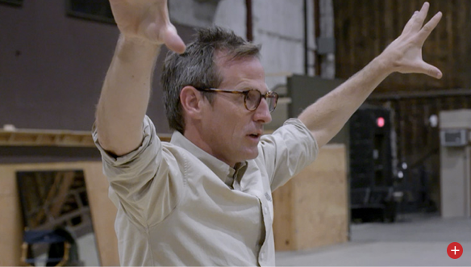
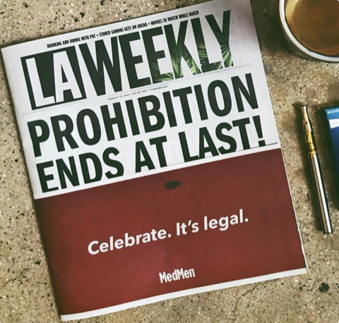
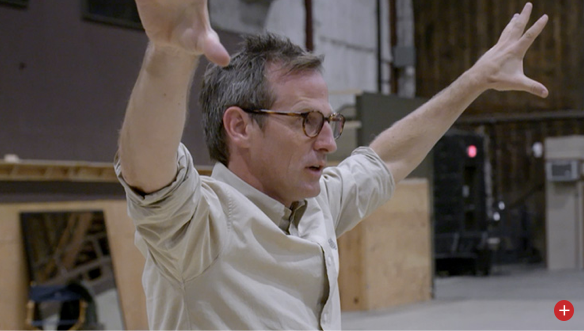

It was important that we told an authentic story, and [Jonze] was the right person to do it.”
– Adam Bierman,
MedMen Co-Founder
– Adam Bierman,
MedMen Co-Founder

American Cannabis: The New Normal
DIRECTED BY
SPIKE JONZE
